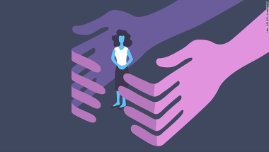

Este tipo de violencia es muy común lamentablemente por lo que puede que las víctimas no sepan que están sufriendo de esto, el acoso sexual se puede presentar en cualquier tipo de situación y lugar ya sea en desde la primaria hasta la universidad, así como en el trabajo y en las calles.cle>